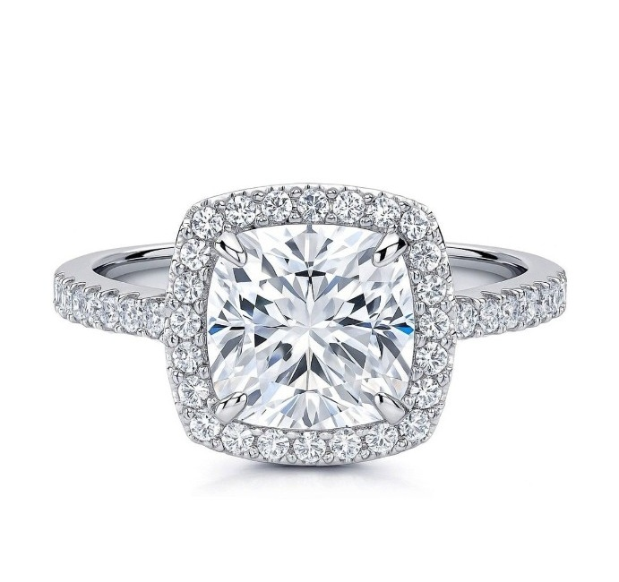

A little surprise for Beatrice ♡
Catch Your Man
There are plenty of handsome faces… but only one is yours. Can you catch him before he disappears?
⏱ Your man appears for just 0.3 seconds
💗 Ready, Beatrice?
Watch closely. Tap the picture when you see your man!
Wrong guy? No worries. Love deserves another chance. ♡
You found him ♡
That's your man! 💖
You found me, my love.
And now… here's your ring. 💍

Beatrice, out of all the faces in the world, you found mine. And I'd choose you every single time. ❤️